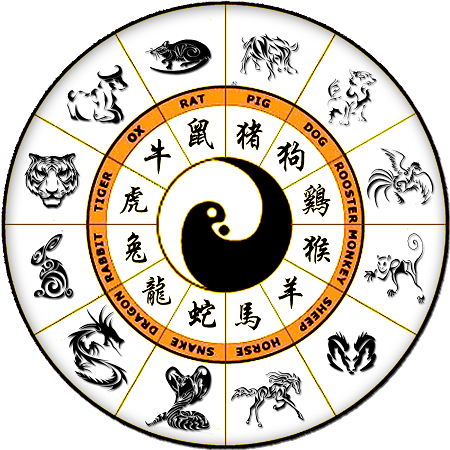

The Chinese zodiac(生肖) is the classification scheme that assigns an animal to each year in a repeating twelve-year cycle. The 12-year cycle of Chinese zodiac is an approximation to the 11.86-year cycle of Jupiter, the largest planet of the solar system. There is a similar concept in western astrology and means "circle of animals". It is a scheme and systematic plan of future action that relates each year to an animal and its reputed attributes according to a 12-year cycle. It remains popular in several East Asian countries including China, Vietnam, Korea, Japan, Philippines, Thailand and Taiwan. It is also related to mathematics system named earth branch(地支).
